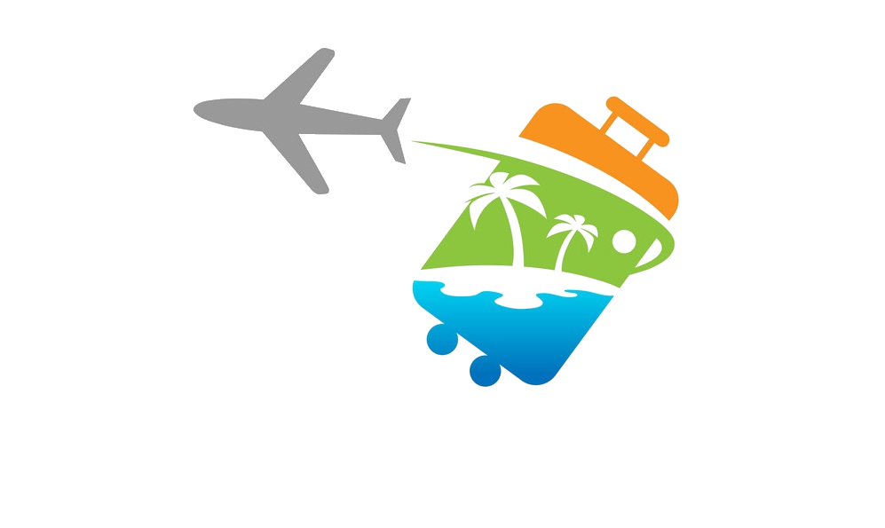

Travel Goals
Home
Portfolio
Gallery
About
Contact
I am a Traveler
“LIFE IS EITHER A DARING ADVENTURE OR NOTHING AT ALL” ~ HELEN KELLER
Where I've Been
Hi! I was born in Medina, Misamis Oriental. Currently staying here in Cagayan de Oro City at Barangay Camaman-an, Macajalar Street. In staying here in the city is very challenging because you'll encounter different persons with different personalities that you've met everyday, the environment that makes people more productive and the economic status that always been priorities by the government.
What I Wanted To Do
Hmm... Thinking of this question "What I Wanted To Do"... I wanted to travel all around the world after many years of working (Hopefully it will be come true hehehe...), with my family and also to my partner because I want to create memories that I will cherish forever.
Travel Bucket List
The travel bucket list that I want to go: Walk along the Great Wall of China, Visit the Colosseum, Discover the Taj Mahal, Discover the Amazon Rainforest and River, Drink wine under the Eiffel Tower, Enjoying at Sydney Opera House, Swim in Palawan, Puerto Princesa Subterranean River National Park, Experience Japanese Nightlife, and many more :D!